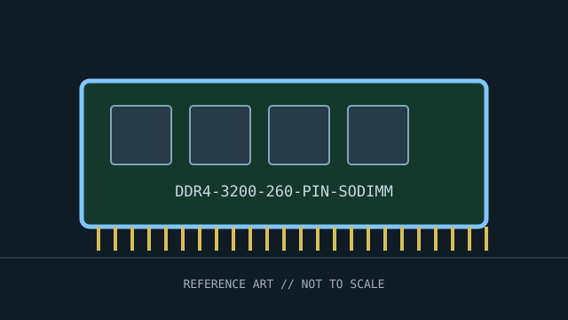

[ INDIVIDUAL COMPONENT // MEMORY / RAM ]
DDR4-3200 260-pin SO-DIMM
DDR4 SO-DIMM standard speed class. This record identifies a distinct product or standards-defined module class; specifications not verified for this exact identity are deliberately left open.

IDENTITY: DDR4-3200 260-pin SO-DIMM is cataloged as ddr4 so-dimm standard speed class. Standards entries describe a module class; named manufacturer entries describe one SKU. Do not treat them as interchangeable records.
Recorded specifications
| Catalog identity | DDR4-3200 260-pin SO-DIMM |
|---|---|
| Record type | DDR4 SO-DIMM standard speed class |
| Verified specifications | 260-pin SO-DIMM; DDR4-3200 (3200 MT/s) class; nominal 1.2 V. Capacity, ranks, CAS latency, and ECC support depend on the exact module; mainstream laptop modules are typically non-ECC. |
| Compatibility | Requires a DDR4 SO-DIMM socket and platform supporting the module’s density and rate. DDR4 SO-DIMM cannot substitute for DDR3 or DDR5 SO-DIMM; check CPU/chipset and system vendor limits. |
| Unverified/variable details | Only values supported by the cited standard or manufacturer source are stated. Confirm exact part number/revision, SPD, ranks, timings, and voltage on the specimen when not specified above. |
Platform compatibility and service
- Requires a DDR4 SO-DIMM socket and platform supporting the module’s density and rate. DDR4 SO-DIMM cannot substitute for DDR3 or DDR5 SO-DIMM; check CPU/chipset and system vendor limits.
- Before installation, record the full label, manufacturer, part number, revision/date code, contact condition, chip markings, and SPD contents where present.
- Use ESD precautions, handle the module by its edges, and never force it into a slot with different keying. Power down and follow the host’s service manual.
- For server/ECC modules, confirm CPU support, buffering type, channel population, supported ranks/densities, and firmware behavior; physical fit is not proof of ECC operation.
Archival and service notes
Standard/form-factor record rather than a branded product. XMP profiles or higher advertised rates are not guaranteed on laptops; use JEDEC SPD profiles supported by the platform. Photograph both sides before cleaning; retain the host manual, SPD dump, test host, BIOS revision, and memory-test result with the catalog record.
Sources & further reading
- JEDEC — JESD79-4 DDR4 SDRAM standardJEDEC interface and device standard reference.
- Kingston — SO-DIMM memory overviewManufacturer compatibility guidance; system service documentation determines support.
Manufacturer source identifies the named SKU where provided; standards pages describe a generation or module class. A source-family page may not capture every revision. Check the precise specimen and platform service documentation.